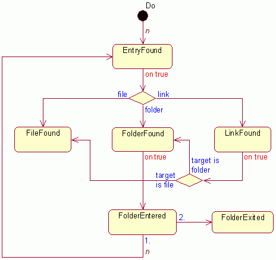

TreeEnumerator class
| Description | Recursive enumeration of folder trees. Details... |
|---|---|
| Module | InputOutput |
| Base classes | - |
| Derived classes | - |
| Header | TreeEnumerator.hpp |
Public methods
Constructors
Copy constructor
operator=
Starting the enumeration
Do
Protected methods
Overridables
EntryFound
FileFound
FolderFound
LinkFound
FolderEntered
FolderExited
Additional methods for derived classes
GetParent
Stop
GetStatus
Description
This class supports recursive enumeration of folder trees. Class Folder is responsible for the enumeration of its direct content (direct children) through an enumeration callback function supplied by the user. Recursive enumeration is somewhat more complicated, and to make it easier and flexible, this class encapsulates a set of callback functions with default implementations which can be overridden by the user. Separate methods are invoked when a new file, folder or link is found and when a subfolder is entered or exited.
User should create a TreeEnumerator instance with the root folder of the enumeration as parameter, start the enumeration (with the Do method) and the appropriate methods will be invoked in the following order:

EntryFound method is invoked for each file system entry (file, folder, link) in the particular folder. On the return value true (which is the default implementation) either FileFound, FolderFound or LinkFound method is invoked depending on the type of the entry (otherwise next entry will be processed). If the return value from the FolderFound method is true (which is the default implementation), then content of the particular (sub)folder will be also enumerated: call to FolderEntered opens the (sub)enumeration, then EntryFound is invoked appropriate times and finally FolderExited closes the (sub)enumeration. If the return value from the LinkFound method is true (which is the default implementation), then type of the link's final target is determined and either FileFound or FolderFound method is invoked depending on this type (passing to these methods name of the link and not name of the link's target, that is link is presented as file or folder).
To do something more useful then running through the folder tree (this is the default implementation in TreeEnumerator), user should derive own class from TreeEnumerator and override appropriate methods. Inside the body of every "callback" method user can invoke few additional methods like query of the parent folder of the current entry or stopping the enumeration.
Enumeration will continue even if an error is encountered (for example access to a folder was denied). In this case code of the first error is stored and will be returned as result of the enumeration (as return value of the Do method). Inside of callback methods current status of the enumeration can be queried with the GetStatus method.
Enumeration works properly even if the current entry is deleted. However this is not true for deleting of other entries and for other operations that modify content of the folder tree under enumeration.
- Determining whether is a file system entry link or not is very slow and can significantly slow down the whole recursive enumeration process. If it is unacceptable then consider the RestrictLinkExtensions function which can radically speed up the link processing.